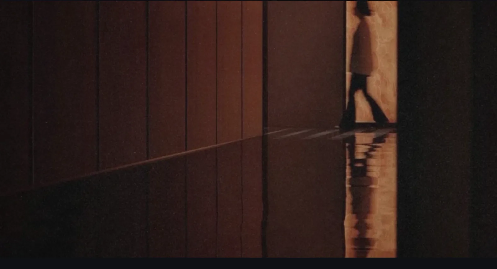
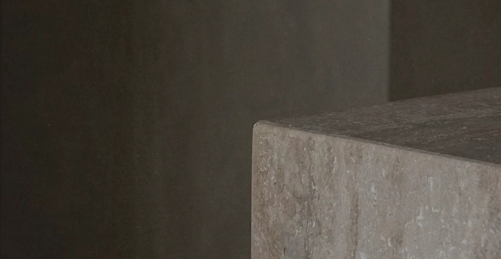
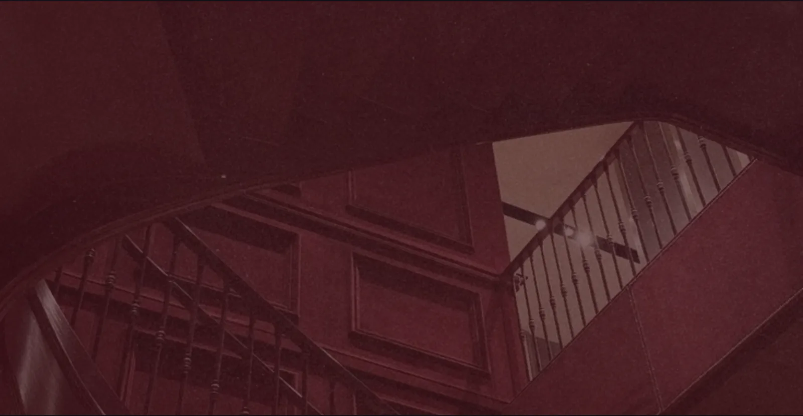
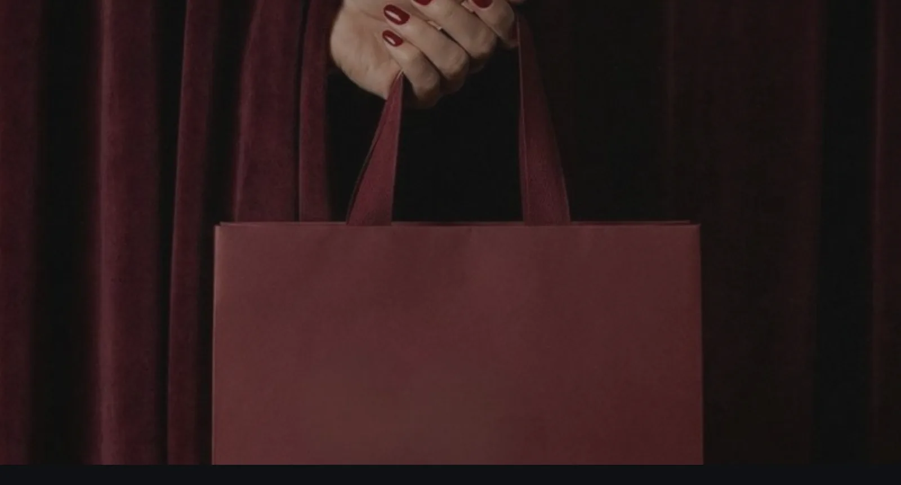
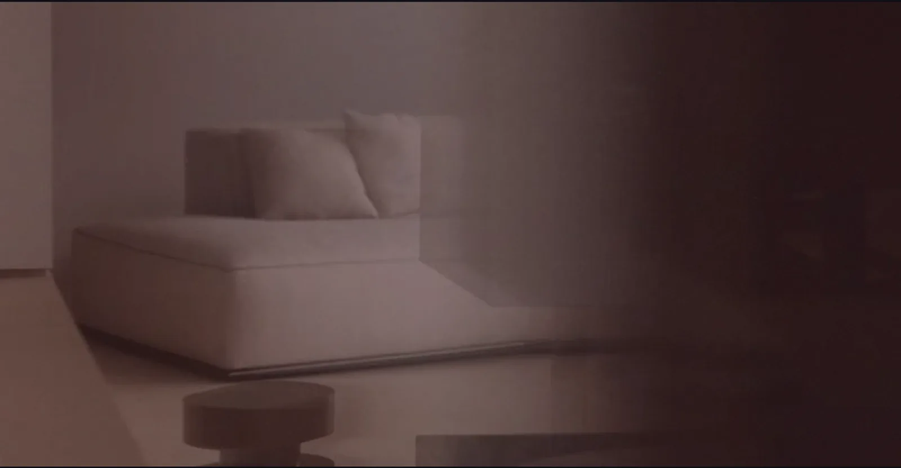
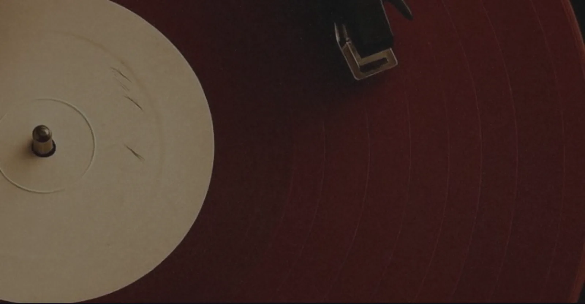
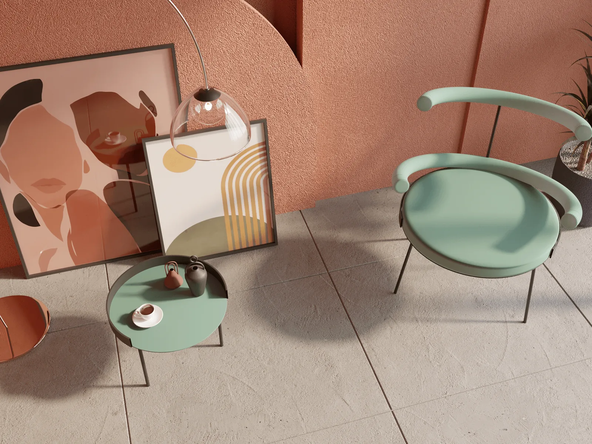
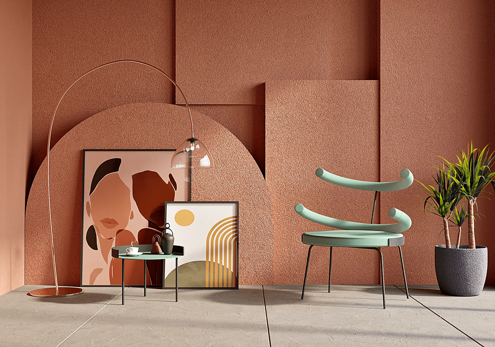
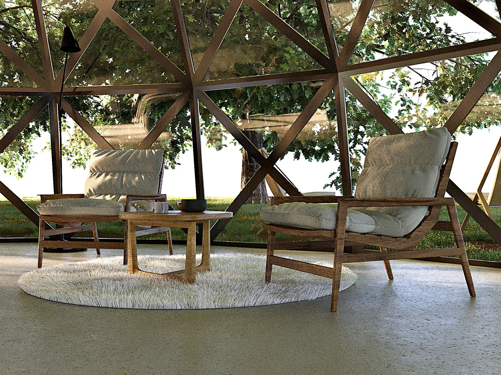
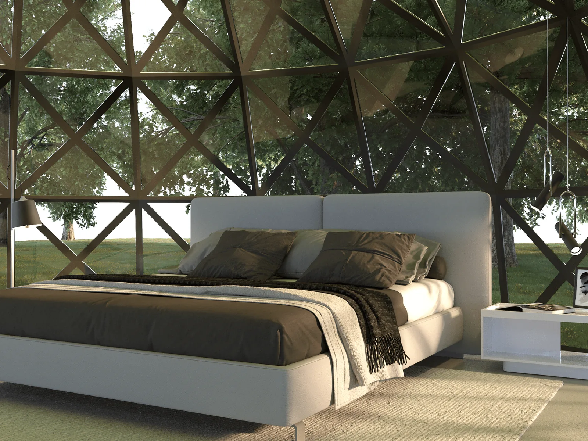

Approach





HOW WE BEGIN
We design spaces as portraits of the people who live in them, and the brands people come to experience.
It begins with the interview, not the floor plan.
Before a single material is chosen, we sit with you, your history, your interests, the way you actually live or the way a brand wants to be met. Most studios start with a list of rooms. We start with a person.
We design through psychology, not decoration.
Colour, pattern, and proportion aren't chosen because they're current. They're chosen for what they do — how a palette settles a room, how a space is made to feel a certain way before anyone can say why.
Your story becomes the material.
For a residence at Garden City, Islamabad, the client had spent years travelling. We asked not for interior references but for their own photographs of the places themselves, and drew the patterns, colours, and motifs of those landscapes into the fabric of the home. Not a house that referenced travel. A house that could only have been theirs.
Bespoke is the conclusion, not an upgrade.
When a concept comes from one story, the pieces that complete it can't be bought off a shelf. We design them directly from the concept, made for one client, and no one else.
A finished space should feel less like a style than a recognition — the moment someone walks in and sees themselves.

01
SPACES
Spaces are the core of the studio — interiors designed as portraits, whether of a person or a brand, for clients across the world.
Mostly residential, by conviction.
The majority of our work is private: apartments and villas, designed for the people who live in them and for the way they want to be lived in. Some are homes. Others are residences built for short-stay and real estate, spaces that must feel personal and considered the moment a guest walks in, then do it again for the next.
Commercial, when the brief has a story to tell.
We take on commercial work where the same method applies — where a space has to express an identity, not just function. A fashion retail store. A hotel lobby. Environments where every visitor forms an impression in seconds, and the design has to carry the brand's character into something they can feel and move through.
The method doesn't change with the brief.
Residential or commercial, the approach holds. We start with the person or the brand, draw the concept from their story, and resolve it down to bespoke detail. A villa and a lobby are designed the same way, as portraits, made specific.
Residences across [7+] countries · apartments, villas & short-stay ·

02
Art
Art is used as an atmospheric layer. We curate pieces that introduce memory, contrast, stillness, and cultural texture without disrupting the calm of the wider interior composition.

03
Lighting
Lighting is considered architecture in its own right. Soft wall glows, task lighting, sculptural fixtures, and concealed illumination work together to define mood and depth.

04
STYLING
Styling is the last ten percent that decides the whole. The objects, textures, and arrangements that turn a finished space into one that feels lived in, and unmistakably someone's.
We style in tone, not contrast.
Objects belong to the room, not against it. We work within a space's own palette — travertine, oak, terracotta, sage, warm plaster — so every piece settles into the whole rather than competing for attention. The result reads as composed, never decorated.
Curated, with intent.
We mostly source and curate sculptural ceramics, art books, organic vessels, considered tablescapes, choosing each piece for weight, material, and how it sits against what's already there. Nothing fills space. Everything completes a thought begun in the architecture.
From warm noir to soft and serene.
The same hand moves across registers, a dark, moody room built from stone and low light, or a pale, quiet one in cream and brass. What stays constant is restraint: enough to give a space warmth and character, never so much that it tips into performance.
Our projects, or yours.
We style the spaces we design and, just as readily, spaces designed by others, bringing the same eye to a finished room that needs its final, defining layer.
Done well, styling is invisible as an act and unmistakable as a result.

05
Branding
For hospitality and commercial work, spatial branding ensures the interior carries the same clarity as the brand itself—from first impression and signage to texture, scent, and guest memory.